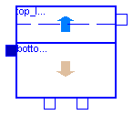

This package contains an ASM3 secondary clarifier model and an Interfaces sub-library based on Krebs conceptional model [1]. The settler model consists of two compartments, a "sludge-bed" and a clear water zone above.
Main Author: Gerald Reichl Technische Universitaet Ilmenau Faculty of Informatics and Automation Department Dynamics and Simulation of ecological Systems P.O. Box 10 05 65 98684 Ilmenau Germany email: gerald.reichl@tu-ilmenau.de
References: [1] P. Krebs and M. Armbruster and W. Rodi: Numerische Nachklaerbeckenmodelle. Korrespondenz Abwasser. 47 (7) 2000. pp 985-999.
Copyright (C) 2002 - 2003, Gerald Reichl
The Modelica package is free software; it can be redistributed and/or modified
under the terms of the Modelica license, see the license conditions
and the accompanying disclaimer in the documentation of package
Modelica in file "Modelica/package.mo".
WasteWater.ASM3.SecClar.Krebs.SecClarModKrebs
This component models an ASM3 secondary clarifier based on Krebs conceptional model. It consists of two compartments: a "sludge-bed" and a clear water zone above.
| Name | Default | Description |
|---|---|---|
| f_Si | 0.0 | Production of Si in hydrolysis [g COD_Si/(g COD_Xs)] |
| Y_STO_O | 0.85 | Aerobic yield of stored product per Ss [g COD_Xsto/(g COD_Ss)] |
| Y_STO_NOX | 0.80 | Anoxic yield of stored product per Ss [g OD_Xsto/(g COD_Ss)] |
| Y_H_O | 0.63 | Aerobic yield of heterotrophic biomass [g COD_Xh/(g COD_Xsto)] |
| Y_H_NOX | 0.54 | Anoxic yield of heterotrophic biomass [g COD_Xh/(g COD_Xsto)] |
| Y_A | 0.24 | Yield of autotrophic biomass per NO3-N [g COD_Xa/(g N_Snox)] |
| f_Xi | 0.20 | Production of Xi in endog. respiration [g COD_Xi/(g COD_Xbm)] |
| i_N_Si | 0.01 | N content of Si [g N/(g COD_Si)] |
| i_N_Ss | 0.03 | N content of Ss [g N/(g COD_Ss)] |
| i_N_Xi | 0.02 | N content of Xi [g N/(g COD_Xi)] |
| i_N_Xs | 0.04 | N content of Xs [g N/(g COD_Xs)] |
| i_N_BM | 0.07 | N content of biomass Xh,Xa [g N/(g COD_bm)] |
| i_SS_Xi | 0.75 | SS to COD ratio for Xi [g SS/(g COD_Xi)] |
| i_SS_Xs | 0.75 | SS to COD ratio for Xs [g SS/(g COD_Xs)] |
| i_SS_BM | 0.90 | SS to COD ratio for biomass Xh,Xa [g SS/(g COD_Xbm)] |
| hsc | 4.0 | height of secondary clarifier [m] |
| Asc | 1500.0 | area of secondary clarifier [m2] |
| ISV | 130 | Sludge Volume Index [ml/g] |
model SecClarModKrebs
"ASM3 Secondary Settling Tank Model based on Krebs"
extends WasteWater.Icons.SecClarKrebs;
extends WasteWater.ASM3.Interfaces.stoichiometry;
package WWSC = WasteWater.ASM3.SecClar.Krebs.Interfaces;
extends WWSC.SCVar;
extends WWSC.ratios;
package SI = Modelica.SIunits;
package WI = WasteWater.ASM3.Interfaces;
package WWU = WasteWater.WasteWaterUnits;
parameter SI.Length hsc=4.0 "height of secondary clarifier";
parameter SI.Area Asc=1500.0 "area of secondary clarifier";
parameter WWU.SludgeVolumeIndex ISV=130 "Sludge Volume Index";
Real te "thickening time in sludge layer in [d]";
SI.Length hs "height of sludge layer";
SI.Length he "height of excess layer";
WI.WWFlowAsm3in Feed;
WI.WWFlowAsm3out Effluent;
WI.WWFlowAsm3out Return;
WI.WWFlowAsm3out Waste;
equation
// total sludge concentration in clarifier feed
Xf = i_SS_Xi*Feed.Xi + i_SS_Xs*Feed.Xs + i_SS_BM*Feed.Xh + 0.60*Feed.Xsto +
i_SS_BM*Feed.Xa;
// ratios of solid components
rXi = Feed.Xi/Xf;
rXs = Feed.Xs/Xf;
rXh = Feed.Xh/Xf;
rXsto = Feed.Xsto/Xf;
rXa = Feed.Xa/Xf;
//following expression is only for steady state initial equation of XB and is necessary
//to calculate hs, if there would be problems with "initial()" in your modelica version
//leave out this term and initial XB (or hs) manually e.g. via script-file
if initial() then
XB = Feed.Q/(0.7*(-(Return.Q + Waste.Q)))*Xf;
end if;
//thickening time in sludge layer in [d]
te = 5/7*Asc*hs/(-(Return.Q + Waste.Q));
//sludge concentration in sludge layer (unit of time in [h]) in [g/m3]
XB = (1000/ISV*((te*24)^(1/3)))*1000;
//sludge concentration of return
XR = 0.7*XB;
//ODE of height of sludge layer
der(hs) = (Feed.Q*Xf - (-(Return.Q + Waste.Q))*XR)/(Asc/2*XB);
//height of excess layer
he = hsc - hs;
// ODE of soluble components in first stirrer tank of the excess layer
der(So1) = (Feed.Q*Feed.So - (-Effluent.Q)*So1 - (-(Waste.Q + Return.Q))*So1)/(Asc*he/2);
der(Si1) = (Feed.Q*Feed.Si - (-Effluent.Q)*Si1 - (-(Waste.Q + Return.Q))*Si1)/(Asc*he/2);
der(Ss1) = (Feed.Q*Feed.Ss - (-Effluent.Q)*Ss1 - (-(Waste.Q + Return.Q))*Ss1)/(Asc*he/2);
der(Snh1) = (Feed.Q*Feed.Snh - (-Effluent.Q)*Snh1 - (-(Waste.Q + Return.Q))*Snh1)/(Asc*he/2);
der(Sn2_1) = (Feed.Q*Feed.Sn2 - (-Effluent.Q)*Sn2_1 - (-(Waste.Q + Return.Q))*Sn2_1)/(Asc*he/2);
der(Snox1) = (Feed.Q*Feed.Snox - (-Effluent.Q)*Snox1 - (-(Waste.Q + Return.Q))*Snox1)/(Asc*he/2);
der(Salk1) = (Feed.Q*Feed.Salk - (-Effluent.Q)*Salk1 - (-(Waste.Q + Return.Q))*Salk1)/(Asc*he/2);
// ODE of soluble components in second stirrer tank of the excess layer
der(So2) = ((-Effluent.Q)*So1 - (-Effluent.Q)*So2)/(Asc*he/2);
der(Si2) = ((-Effluent.Q)*Si1 - (-Effluent.Q)*Si2)/(Asc*he/2);
der(Ss2) = ((-Effluent.Q)*Ss1 - (-Effluent.Q)*Ss2)/(Asc*he/2);
der(Snh2) = ((-Effluent.Q)*Snh1 - (-Effluent.Q)*Snh2)/(Asc*he/2);
der(Sn2_2) = ((-Effluent.Q)*Sn2_1 - (-Effluent.Q)*Sn2_2)/(Asc*he/2);
der(Snox2) = ((-Effluent.Q)*Snox1 - (-Effluent.Q)*Snox2)/(Asc*he/2);
der(Salk2) = ((-Effluent.Q)*Salk1 - (-Effluent.Q)*Salk2)/(Asc*he/2);
// volume flow rates
Feed.Q + Effluent.Q + Return.Q + Waste.Q = 0;
// effluent, solid and soluble components (ASM3)
Effluent.So = So2;
Effluent.Si = Si2;
Effluent.Ss = Ss2;
Effluent.Snh = Snh2;
Effluent.Sn2 = Sn2_2;
Effluent.Snox = Snox2;
Effluent.Salk = Salk2;
Effluent.Xi = 0.0*XR;
Effluent.Xs = 0.0*XR;
Effluent.Xh = 0.0*XR;
Effluent.Xa = 0.0*XR;
Effluent.Xsto = 0.0*XR;
Effluent.Xss = 0.0*XR;
// return sludge flow, solid and soluble components (ASM3)
Return.So = So1;
Return.Si = Si1;
Return.Ss = Ss1;
Return.Snh = Snh1;
Return.Sn2 = Sn2_1;
Return.Snox = Snox1;
Return.Salk = Salk1;
Return.Xi = rXi*XR;
Return.Xs = rXs*XR;
Return.Xh = rXh*XR;
Return.Xa = rXa*XR;
Return.Xsto = rXsto*XR;
Return.Xss = XR;
// waste sludge flow, solid and soluble components (ASM3)
Waste.So = So1;
Waste.Si = Si1;
Waste.Ss = Ss1;
Waste.Snh = Snh1;
Waste.Sn2 = Sn2_1;
Waste.Snox = Snox1;
Waste.Salk = Salk1;
Waste.Xi = rXi*XR;
Waste.Xs = rXs*XR;
Waste.Xh = rXh*XR;
Waste.Xa = rXa*XR;
Waste.Xsto = rXsto*XR;
Waste.Xss = XR;
end SecClarModKrebs;